Gas nitriding is a surface hardening process, where nitrogen is added to the surface of steel parts using dissociated ammonia as the source. Gas nitriding develops a very hard case in a component at relatively low temperature, without the need for quenching.
This lab will demonstrate how to use MO template to prepare a Nitriding simulation. The thickness of compound layers formed on the surface of pure iron during the nitriding process was analytically calculated. Two separate equations were applied for predicting the thickness of the binary compound layers; epsilon (
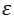
) and gamma prime (
1.5. Adding Material to the Project
1.7.2. Assign Material for Workpiece
1.8. Initialize Volume Fraction
On a Windows machine, go to the  button select DEFORM-v1x.xxx (.xxx indicates version number E.g. v14.0.2) and select DEFORM GUI Main v1x.x from the menu. The DEFORM GUI Main window will appear as shown in Fig. 2DNL1.1.
button select DEFORM-v1x.xxx (.xxx indicates version number E.g. v14.0.2) and select DEFORM GUI Main v1x.x from the menu. The DEFORM GUI Main window will appear as shown in Fig. 2DNL1.1.
DEFORM GUI Main window
Create a new problem either by selecting File  New Problem or by clicking the New Problem
New Problem or by clicking the New Problem  icon. The Problem Setup window will appear as shown in Fig. 2DNL1.2. Select " Integrated Manufacturing Process" radio
button and unit system as "SI" radio button in unit field. Define Problem Name as " 2D_Nitrding_Lab1 " and make sure the “Show option dialog” check box is turned on (if we do not turn on the “Show option dialog”
check box, then we will not get the New Project dialog in MO UI). Then click on
icon. The Problem Setup window will appear as shown in Fig. 2DNL1.2. Select " Integrated Manufacturing Process" radio
button and unit system as "SI" radio button in unit field. Define Problem Name as " 2D_Nitrding_Lab1 " and make sure the “Show option dialog” check box is turned on (if we do not turn on the “Show option dialog”
check box, then we will not get the New Project dialog in MO UI). Then click on  button to open a new Problem using the Deform Integrated Manufacturing Process.
button to open a new Problem using the Deform Integrated Manufacturing Process.
New Problem page
Multiple operation wizard will open with the New Project dialog, at this point user will be prompted to specify a project name (system will create a separate folder with this project name) and title for this session. In this session we will use "2D_Nitrding_Lab1 "
as the project name. Click on  to continue to open the operation.
to continue to open the operation.
Add 2D Forming operation from the Explorer Operations list. Add the operation by clicking on  button available next to 2D Forming or can also be added by drag and drop into the
Operation editor (See Fig. 2DNL1.3.). When we add the 2D Forming operation, process settings Window will open by default.
button available next to 2D Forming or can also be added by drag and drop into the
Operation editor (See Fig. 2DNL1.3.). When we add the 2D Forming operation, process settings Window will open by default.
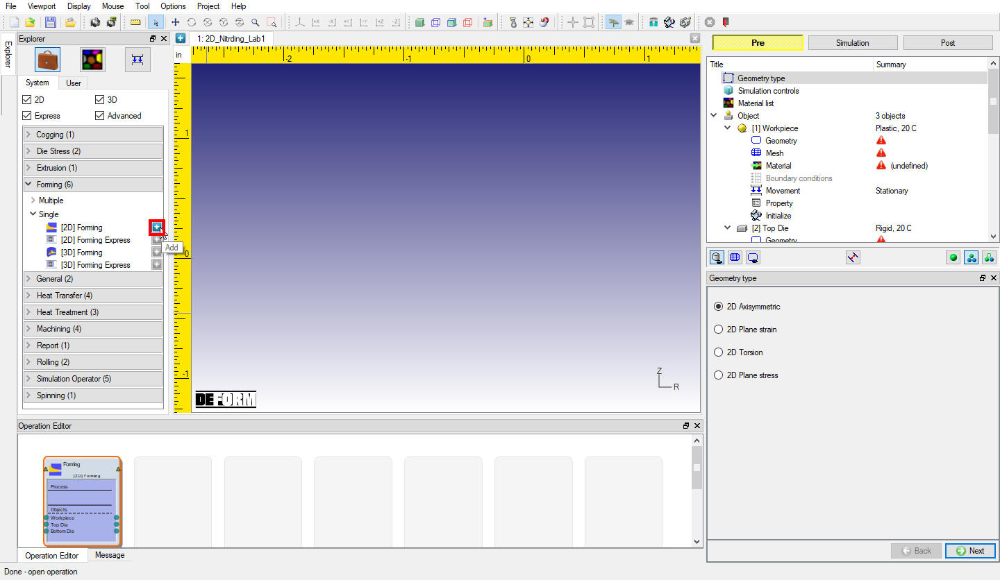
Adding 2D Forming operation
Click on the operation item the name tag, change it from ‘Forming’ to ‘Nitriding’.
Turn on ‘2D Plane strain’ radio button in geometry type page (See Fig. 2DNL1.4.), then click on  to Simulation controls.
to Simulation controls.
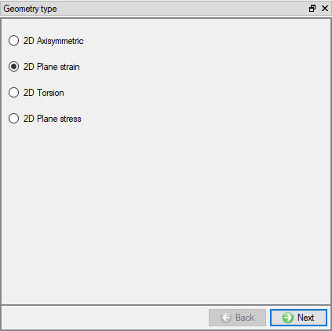
Geometry type selection
In this lab, we will be demonstrating how to setup Nitriding process which requires some advanced options here, Switch to  mode in ‘Simulation controls’ window make sure ‘Diffusion’
and ‘Transformation’ models under ‘Heat transfer’ are checked (See Fig. 2DNL1.5.).
Then click on
mode in ‘Simulation controls’ window make sure ‘Diffusion’
and ‘Transformation’ models under ‘Heat transfer’ are checked (See Fig. 2DNL1.5.).
Then click on  ‘Process conditions’ page.
‘Process conditions’ page.
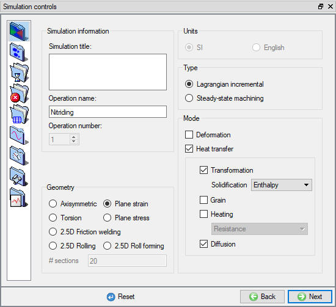
Simulation controls window
Nitriding is a heat treating process that diffuses nitrogen into the surface of a metal to create a case-hardened surface, so in this lab, we will deal only with atom – nitrogen. Click on "Process condition" then ‘Diffusion’
tab, change the atom’s name from ‘carbon’ to ‘Nitrogen’ (See Fig. 2DNL1.6.). Then click  . Click
. Click  in popup.
in popup.
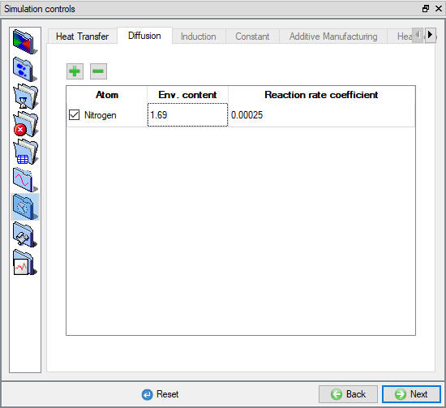
Modify atom’s name in simulation control window
Compound layers ( +) will
form on the surface of pure iron (
+) will
form on the surface of pure iron (
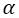
). In this lab, we need to add material ‘Iron’ and its transformation relationships. On ‘Material list’ window click on
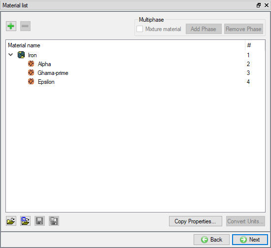
Material List Window
In the nitriding of iron, when the nitrogen concentration exceeds the solubility limit, extra nitrogen atoms make stoichiometric compounds with iron atoms. The surface composition of the nitrided iron can be predicted by considering the Fe-N binary phase diagram. In this lab demonstration, the surface structure of the nitrided iron includes - Fe (N) diffusion zone (solid solution of nitrogen in - Fe), ' and compound layers. The nitrogen contents (solubility limits) at the material interface are listed in Table 1.
|
Position |
N Content (At. Pct. N) |
|
Surface |
26.34 |
|
/ |
23.59 |
|
|
19.923 |
|
|
19.479 |
|
0.365 |
Nitrogen content
Click  , comes to the first defined Iron’s material page. In this Nitriding lab, properties like phase transformation and diffusion coefficient need to be specified.
, comes to the first defined Iron’s material page. In this Nitriding lab, properties like phase transformation and diffusion coefficient need to be specified.
Transformation
To add the phase transformation relationships for Iron, click
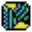
. Then from the mother phase choose ‘Alpha’, and child phase ‘Gamma-prime’, click
The nitrided layer thickness growth of ,  follow the parabolic law, select the following model for the
follow the parabolic law, select the following model for the  layer (Alpha
layer (Alpha  Gamma-prime)
Gamma-prime)
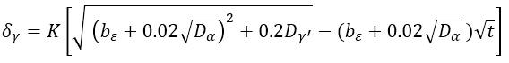
and type in 0.6 for the correction factor K. At 0.365, the solubility of nitrogen, Alpha starts transforming to Gamma-prime. In the end, the nitrogen content will reach 19.479, and Gamma-prime forms totally. So at Alpha/Gamma-prime interface, define nitrogen content ‘Start’ value of 0.365, and ‘End’ value 19.479 (See Fig. 2DNL1.8.).
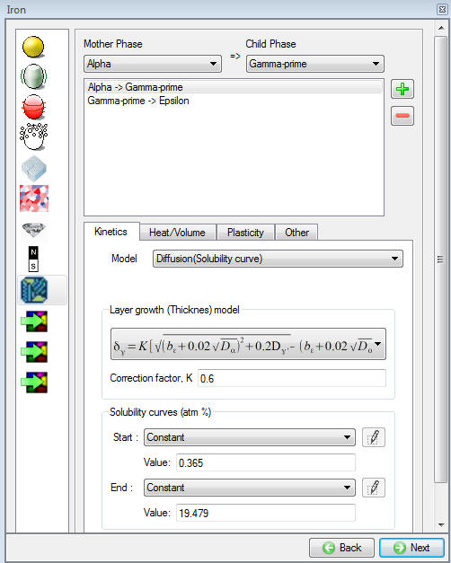
'Material Editor' - transformation definition 1
Add another transformation by choosing mother phase as Gamma Prime and Child phase as Epsilon. Choose the layer growth model listed below for (Gamma-prime  Epsilon), set K to 0.3. And define the solubility of nitrogen starting from 19.923 to the end 23.59 as Gamma-prime transferring to Epsilon. (See Fig. 2DNL1.9.).
Epsilon), set K to 0.3. And define the solubility of nitrogen starting from 19.923 to the end 23.59 as Gamma-prime transferring to Epsilon. (See Fig. 2DNL1.9.).
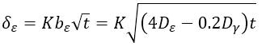
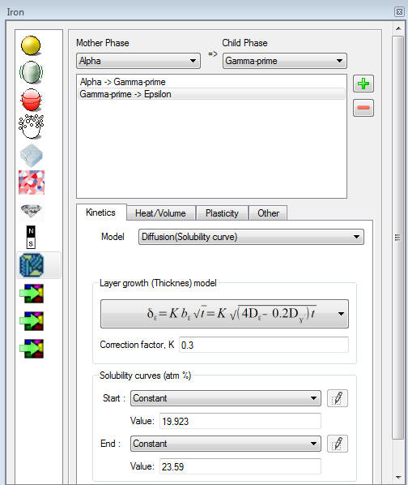
Material Editor - transformation definition 2
Diffusion Coefficient
The diffusion coefficients for the defined phases are listed in table. 2, click the Diffusion icon on the material page to define them for the corresponding materials.
|
Nitriding Temperature [°C] |
570 |
|
|
Diffusion Coefficient of Nitrogen [10 -8 mm2/s ]
|
Epsilon () |
3.4 |
|
Gamma -prime ( |
18.1 |
|
|
Alpha () |
983.3 |
|
Diffusion coefficient of nitrogen
Thermal Properties
Thermal properties are not necessary because the object’s temperature is constant and same as the environment temperature in this lab. But they are still required for DB generation. For Iron, type in 30 for thermal conductivity, 5.5 as heat capacity, 0.7 as emissivity and 7.85e-09 as density, see Fig. 2DNL1.10. Then Type in the same values for all the child materials.
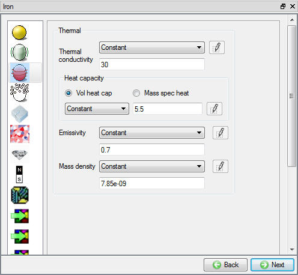
Thermal Properties Page
Click on the ‘Object’ item from the operation tree, go to object list page. From the list, delete all the other objects except the ‘Workpiece’.
Click on the ‘Workpiece’ item from the operation tree , go to define the object. Type in 'Cold-rolled slab specimen' as object name, set the temperature to 570°C, leave all others as default (See Fig. 2DNL1.11.).
Then click on  go to the 'Geometry' definition page.
go to the 'Geometry' definition page.
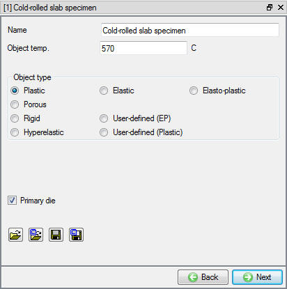
Workpiece definition page
In 'Geometry' page, click on  , on the following page choose 'Bar', and give 9 mm as width, and 0.8 mm as height (See Fig. 2DNL1.12.),
the object geometry is also previewed at the central graphic window area. Click on
, on the following page choose 'Bar', and give 9 mm as width, and 0.8 mm as height (See Fig. 2DNL1.12.),
the object geometry is also previewed at the central graphic window area. Click on  button to accept all the changes, and it will come back to the 'Geometry' definition, click
on
button to accept all the changes, and it will come back to the 'Geometry' definition, click
on  until Material page to assign material.
until Material page to assign material.
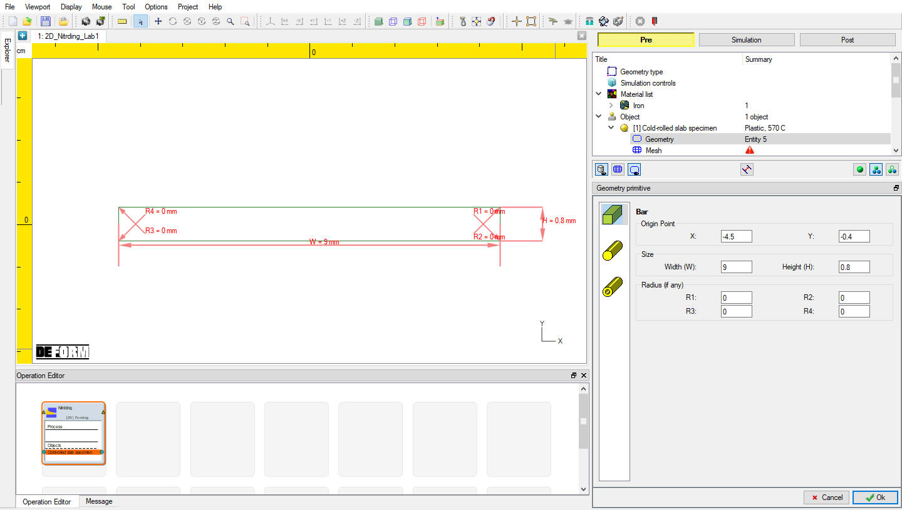
Geometry primitive to create the specimen part
Assign "Iron" material from list for workpiece and click on to Mesh page.
In this lab simulation, the total thickness of the compound layer is about 23m
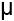
(5m γ' + 18m ), coating mesh is recommended to represent the compound layer. And mesh window is also used to create finer surface mesh layer.
On ‘General’ mesh page, keep default 'System setup' option, put 1600 in 'Target number of Elements' (See Fig. 2DNL1.13.). Then click on 'Weighting Factors', increase the weight of ‘Mesh windows’ to 0.8, See Fig. 2DNL1.14.
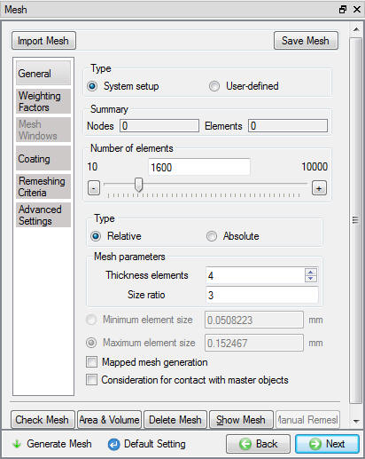
General Mesh page
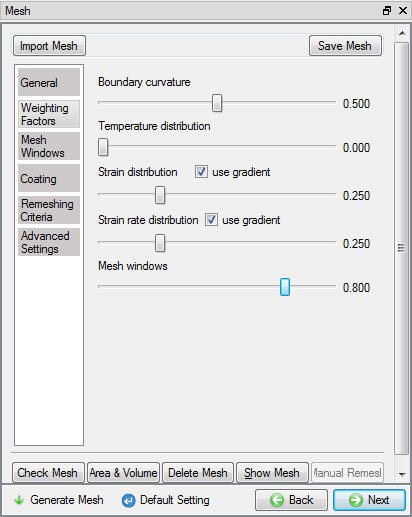
Weighting Factors
Next click on 'Mesh Windows', create two rectangle mesh windows. The first window is put inside the object with relative element size of 1, and second window covers the entire workpiece with the relative element size of 0.1,(see Fig. 2DNL1.15.), this will result into finer surface mesh layer.
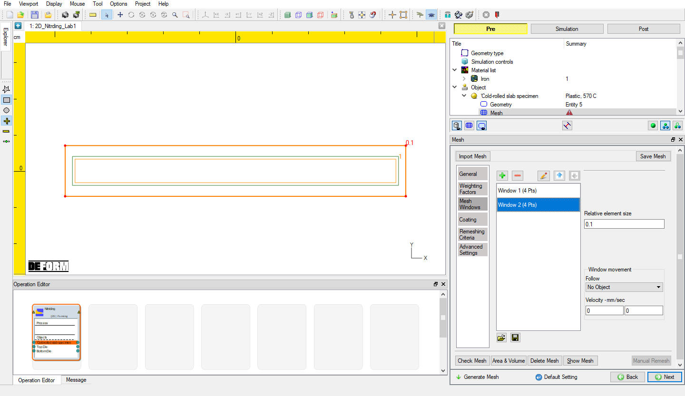
Mesh Windows Defined for Workpiece
Next to define coating layer, click on 'Coating', add 12 coating layers of varied thickness as shown in Fig. 2DNL1.16.
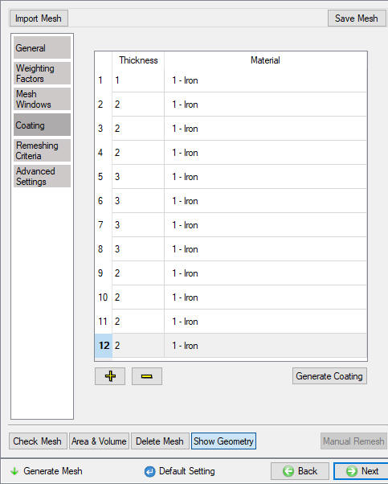
Coating Layers for Workpiece
Now click on  to generate the mesh. Click
to generate the mesh. Click  on the pop-up window to continue. The mouse icon on the screen turns to
busy and then back to normal, which indicates that the mesh has been generated, the results are also plotted on the central graphic area, see Fig. 2DNL1.17.
on the pop-up window to continue. The mouse icon on the screen turns to
busy and then back to normal, which indicates that the mesh has been generated, the results are also plotted on the central graphic area, see Fig. 2DNL1.17.
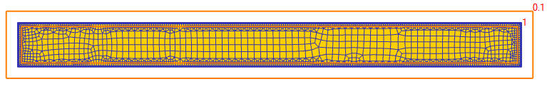
Mesh Generation
At this moment, click on  to access to the element dialog to initialize the volume fraction. On the item list window click ‘Microstructure’
to access to the element dialog to initialize the volume fraction. On the item list window click ‘Microstructure’  ‘Phase’. Then choose ‘Alpha’ and click on
‘Phase’. Then choose ‘Alpha’ and click on  to ‘Initialize Element Data’.
Type in 1, then click on
to ‘Initialize Element Data’.
Type in 1, then click on  , then close the window. click on
, then close the window. click on  until BCC page.
until BCC page.
Heat Exchange with Environment
It can be seen that ‘Heat Exchange with Environment’ BCC has been already defined on the entire object surface when mesh was generated. Click on "Defined" , then "Environment" to change the ‘Environment temperature’ to 570°C, which is same as the object temperature ( Fig. 2DNL1.18.).
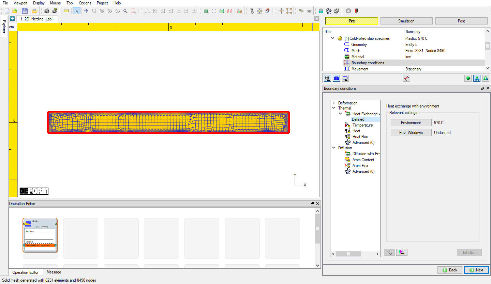
Heat Exchange with Environment Definition
Diffusion BCC
Constant Nitrogen contents on the workpiece are assumed in this Nitriding Lab simulation, to do so click on 'Atom content'. Then type in 26.34 for the ‘Atom Pct.’. Select the entire object surface by clicking
on  on the picking dialog, then click on
on the picking dialog, then click on  to finish the assignment. The BCC definition
can be seen in Fig. 2DNL1.19. Click
to finish the assignment. The BCC definition
can be seen in Fig. 2DNL1.19. Click  until Stopping controls
page.
until Stopping controls
page.
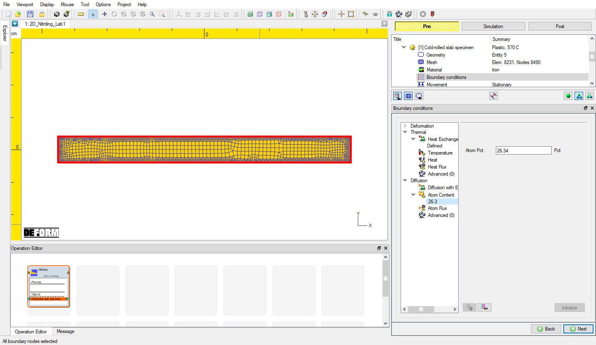
Constant Nitrogen Surface Content
Go to define the process duration. Make sure the system is in ‘Expert’ mode, if not, click on  will switch the system to the expert mode. Then type in 36000 in
the ‘Process duration’ field, see Fig. 2DNL1.20. Then click on
will switch the system to the expert mode. Then type in 36000 in
the ‘Process duration’ field, see Fig. 2DNL1.20. Then click on  to ‘Step’ controls page.
to ‘Step’ controls page.
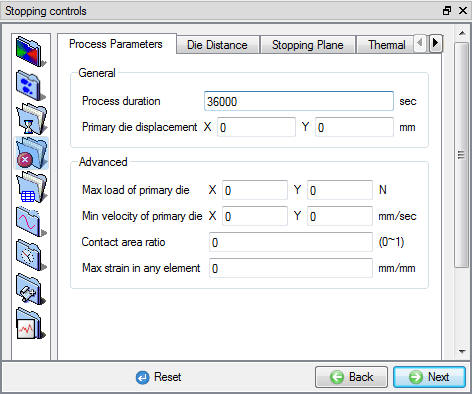
Stopping Controls (Expert Mode)
Switch back to the ‘Guide’ mode by clicking on  , since process duration has been defined simulation will stop accordingly,, type 999999 into ‘Number of steps’ field.
Set 5 as ‘Step increment’ and 20 sec. as the time per step (see Fig. 2DNL1.21.). Then click on
, since process duration has been defined simulation will stop accordingly,, type 999999 into ‘Number of steps’ field.
Set 5 as ‘Step increment’ and 20 sec. as the time per step (see Fig. 2DNL1.21.). Then click on  to ‘Generate DB’ page.
to ‘Generate DB’ page.
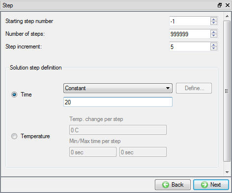
Step Controls (Guide Mode)
In 'Generate DB' page, click  to see if anything was missed in the setup and then click on the
to see if anything was missed in the setup and then click on the  button
to generate the database. Observe the message in Message tab informing database generation status.
button
to generate the database. Observe the message in Message tab informing database generation status.
Once the database has been generated, switch to the Simulation mode by clicking on  button above the operation tree. Click on the
button above the operation tree. Click on the  action label to open the Run Options dialog as shown in Fig. 2DNL1.22. Use the default Continue Run option to select “Continue from the last step”
(from step -1) option and then select the Simulation mode as Interactive and click on
action label to open the Run Options dialog as shown in Fig. 2DNL1.22. Use the default Continue Run option to select “Continue from the last step”
(from step -1) option and then select the Simulation mode as Interactive and click on  button to run the simulation.
button to run the simulation.
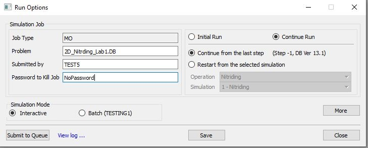
Run Simulation Window
Monitor the progress of the simulation by looking at the Simulation Message and Simulation Log tab, making sure that the  option is checked. User can view the Nitriding
process as the simulation proceeds to the specified Step definition from Simulation graphics.
option is checked. User can view the Nitriding
process as the simulation proceeds to the specified Step definition from Simulation graphics.
After the simulation is finished, open the DB in Next Gen post - processor.
Nitrogen Profiles
‘State variables between two points’ function is a great tool to exam nitrogen concentration profile (vs. depth below the surface).
Click on  , Under Diffusion
, Under Diffusion  Dominant atom, select " Nitrogen "
State variable and click on
Dominant atom, select " Nitrogen "
State variable and click on  to plot and click on
to plot and click on  .
.
Go to last step, then click on State variables between two points
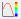
to generate nitrogen profile. Define Start and End points and click on
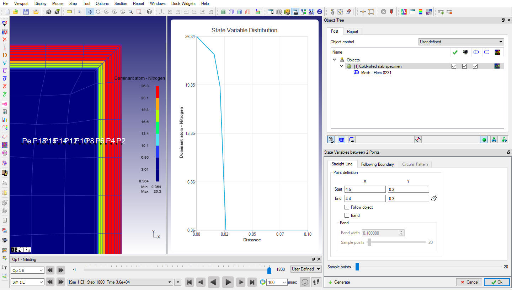
SV between 2 Points: Atom-Nitrogen